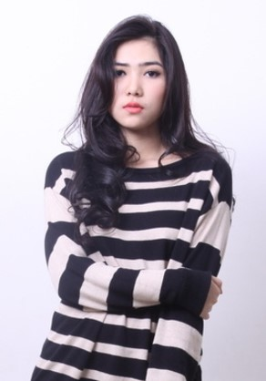

|  |
Isyana Sarasvati Lahir di Bandung, 2 Mei 1993 umur 25 tahun merupakan penyanyi dan penulis lagu berkebangsaan Indonesia. Isyana merupakan lulusan dari Nanyang Academy of Fine Arts, Singapura dan Royal College of Music, Britania Raya. Isyana yang menulis sendiri semua lagunya ini juga pernah menjadi penyanyi opera di Singapura. |